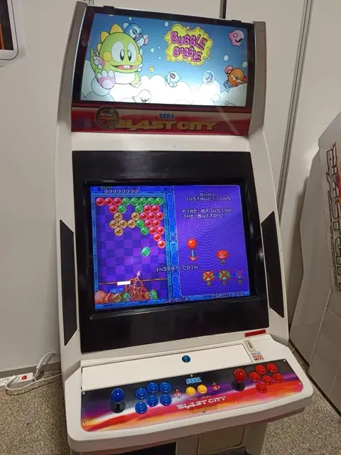
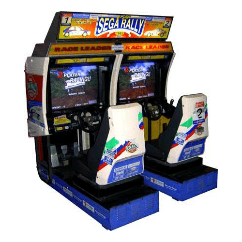
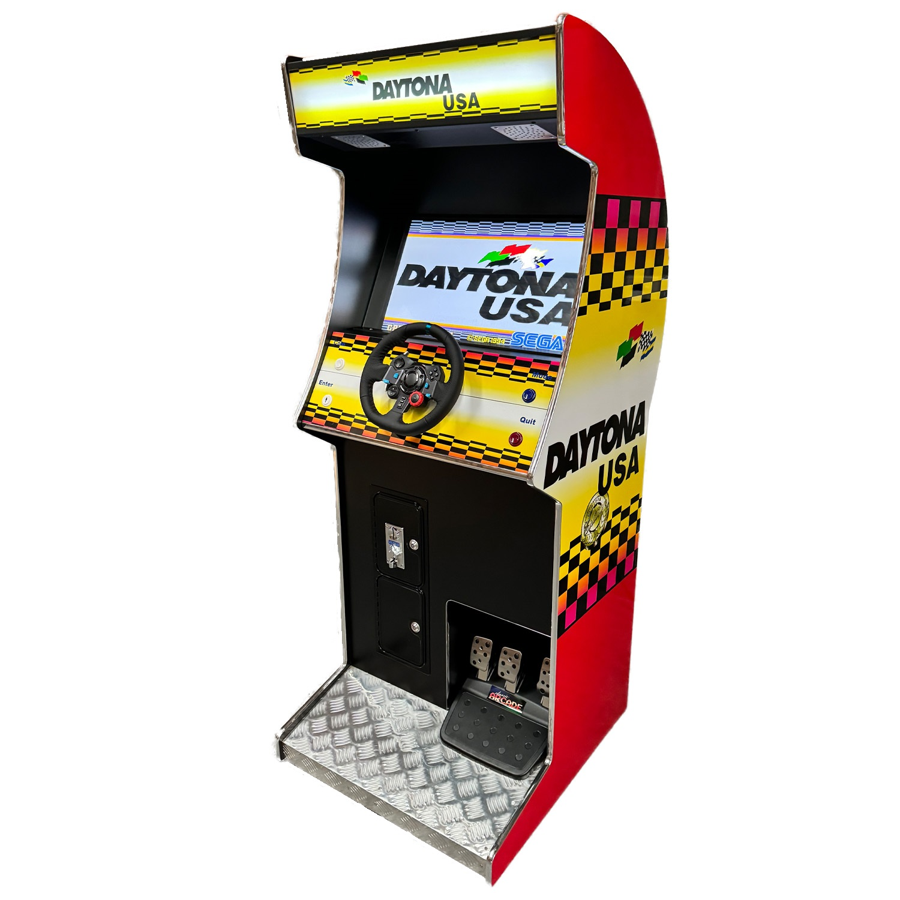
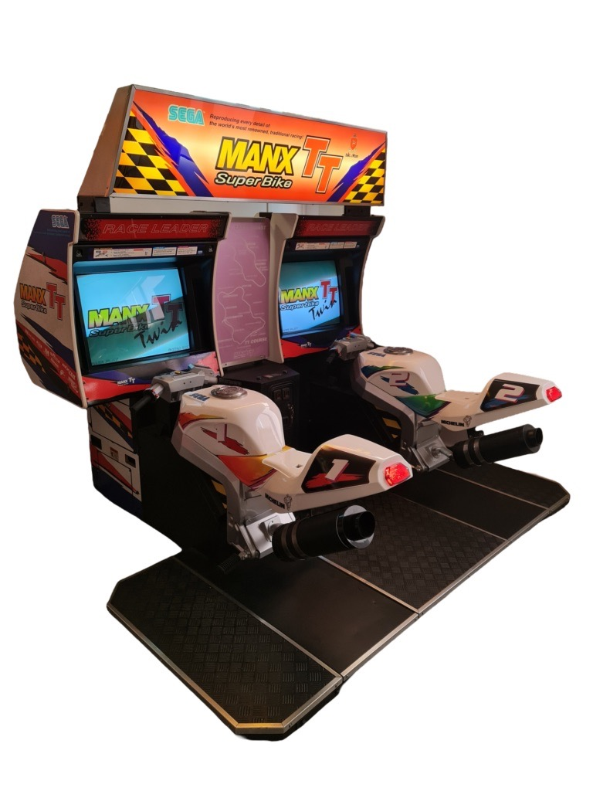
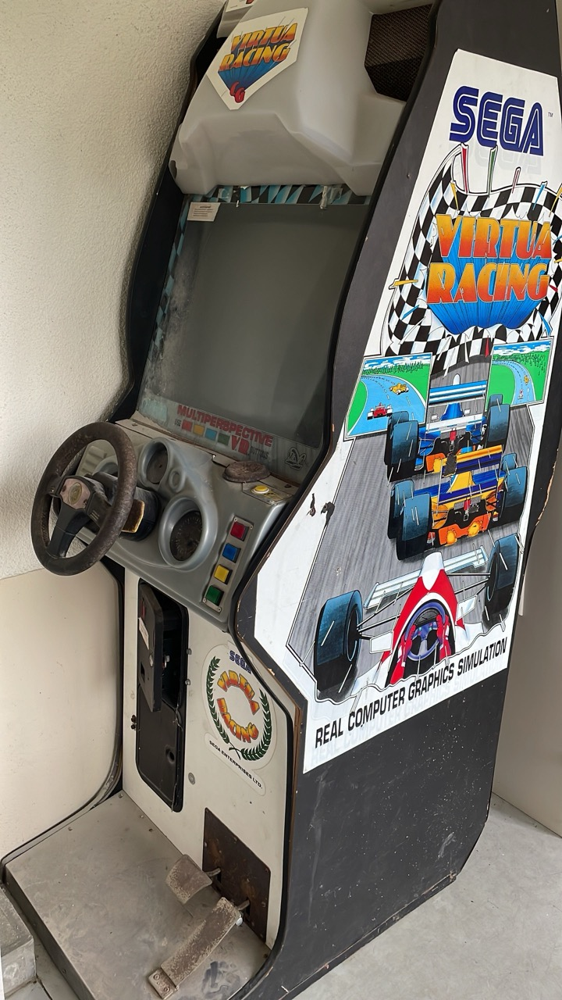
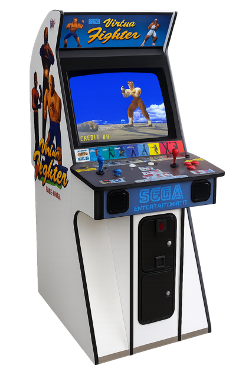
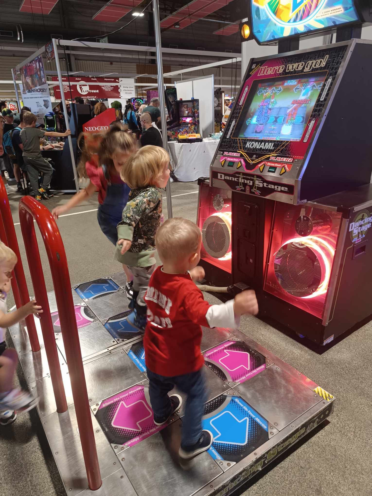

La Borne Blast
Une borne BLAST (souvent appelée Blast City) est une borne d'arcade japonaise de Sega sortie dans les années 1990. Elle est reconnaissable par :
- Un design blanc et vert très répandu dans les salles japonaises.
- Un écran 29 pouces haute résolution, idéal pour les jeux 2D et certains 3D de l'époque.
- Un système modulaire, permettant d'accueillir différentes cartes de jeux (JAMMA/NAOMI).
- Un confort de jeu assis, avec stick + boutons.
👉 En résumé, la Blast City est une borne polyvalente et emblématique, conçue pour accueillir une large variété de jeux d'arcade.
Louer cette borne
La Sega rally
La borne d'arcade Sega Rally Championship, sortie en 1994, est l'un des jeux de course emblématiques de Sega. Conçue autour du système Sega Model 2, elle offrait des graphismes 3D fluides et réalistes pour l'époque. La borne est équipée d'un siège baquet, volant, pédales et levier de vitesses, recréant les sensations de pilotage. Le gameplay se distingue par sa gestion du terrain : routes goudronnées, boue, sable ou neige influencent l'adhérence et la conduite.
👉 En résumé, la borne Sega Rally est une référence des jeux de course arcade, célèbre pour son fun immédiat et son énorme succès en salle dans les années 90.
Louer cette borne
La Daytona USA
La borne d'arcade Daytona USA, sortie en 1994 par Sega, est l'une des plus célèbres et influentes de l'histoire du jeu vidéo de course. Développée sur le système Sega Model 2, elle proposait des graphismes 3D fluides et colorés, impressionnants pour l'époque. La borne est équipée d'un volant réaliste avec retour de force, pédales et levier de vitesses, offrant une immersion totale. Elle vous est proposée en format Solo (Upright).
Son gameplay se distingue par sa vitesse frénétique, ses circuits emblématiques et sa bande-son culte. Daytona USA reste encore aujourd'hui un titre mythique des salles de jeux.
Louer cette borne
La Manx TT Superbike
La borne arcade Manx TT Super Bike, sortie par Sega en 1995, est un jeu de course inspiré de la célèbre compétition moto Isle of Man TT. Elle se distingue par son contrôleur en forme de moto grandeur nature, sur lequel le joueur s'assoit. Pour diriger, on penche physiquement la moto de gauche à droite, donnant une sensation réaliste de pilotage. Disponible en version simple ou double (twin), permettant à deux joueurs de s'affronter côte à côte.
👉 En bref, la borne Manx TT est un simulateur de moto arcade immersif, marquant de son époque par son réalisme et son fun immédiat.
Louer cette borne
La Virtua Racing
La borne d'arcade Virtua Racing, lancée par Sega en 1992, est l'une des plus marquantes de l'histoire du jeu vidéo. Premier jeu de course en 3D polygonale fluide, grâce à la technologie Sega Model 1. Borne équipée d'un volant, pédales (accélérateur/frein) et levier de vitesses, pour une expérience de conduite réaliste. Des graphismes minimalistes mais révolutionnaires à l'époque, offrant une véritable sensation de vitesse.
Louer cette borne
La Virtua fighter 2
La borne d'arcade Virtua Fighter 2, lancée par Sega en 1994, est un jalon majeur dans l'histoire des jeux de combat en 3D. Développée sur le système Sega Model 2, elle offrait des graphismes 3D révolutionnaires, avec des personnages détaillés et des animations fluides à 60 images/seconde. La borne est équipée d'un panel classique arcade : stick et 3 boutons (poing, pied, garde).
Louer cette borne
La Borne DDR
Dance Dance Revolution (DDR) est un jeu vidéo musical d'arcade développé par Konami, lancé en 1998 au Japon. Il est l'un des pionniers du genre rhythm game et a eu un énorme impact sur la culture vidéoludique et la danse récréative.
Le joueur se place sur une plateforme équipée de flèches directionnelles (haut, bas, gauche, droite). Sur l'écran, des flèches montent en rythme avec la musique : le but est de taper du pied sur la bonne flèche au bon moment. Différents niveaux de difficulté permettent aussi bien aux débutants qu'aux experts de participer.
Louer cette borne